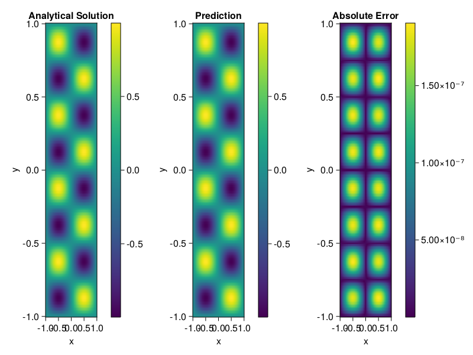

Helmholtz equation
Let us consider the Helmholtz equation in two space dimensions
\[\begin{aligned} &\Delta u(x, y)+k^{2} u(x, y)=q(x, y), \quad(x, y) \in \Omega:=(-1,1)^2 \\ &u(x, y)=0, \quad(x, y) \in \partial \Omega \end{aligned}\]
where
\[q(x, y)=-\left(a_{1} \pi\right)^{2} \sin \left(a_{1} \pi x\right) \sin \left(a_{2} \pi y\right)-\left(a_{2} \pi\right)^{2} \sin \left(a_{1} \pi x\right) \sin \left(a_{2} \pi y\right)+k^{2} \sin \left(a_{1} \pi x\right) \sin \left(a_{2} \pi y\right).\]
The excat solution is $u(x,y)=\sin{a_1\pi x}\sin{a_2\pi y}$. We chose $k=1, a_1 = 1$ and $a_2 = 4$.
using ModelingToolkit, IntervalSets, Sophon, Lux
using Optimization, OptimizationOptimJL
@parameters x,y
@variables u(..)
Dxx = Differential(x)^2
Dyy = Differential(y)^2
a1 = 1
a2 = 4
k = 1
q(x,y) = -(a1*π)^2 * sin(a1*π*x) * sin(a2*π*y) - (a2*π)^2 * sin(a1*π*x) * sin(a2*π*y) + k^2 * sin(a1*π*x) * sin(a2*π*y)
eq = Dxx(u(x,y)) + Dyy(u(x,y)) + k^2 * u(x,y) ~ q(x,y)
domains = [x ∈ Interval(-1,1), y ∈ Interval(-1,1)]
bcs = [u(-1,y) ~ 0, u(1,y) ~ 0, u(x, -1) ~ 0, u(x, 1) ~ 0]
@named helmholtz = PDESystem(eq, bcs, domains, [x,y], [u(x,y)])\[ \begin{align} \frac{\mathrm{d}}{\mathrm{d}y} \frac{\mathrm{d}}{\mathrm{d}y} u\left( x, y \right) + \frac{\mathrm{d}}{\mathrm{d}x} \frac{\mathrm{d}}{\mathrm{d}x} u\left( x, y \right) + u\left( x, y \right) =& - 166.78 \sin\left( 3.1416 x \right) \sin\left( 12.566 y \right) \end{align} \]
Note that the boundary conditions are compatible with periocity, which allows us to apply BACON.
chain = BACON(2, 1, 5, 2; hidden_dims = 32, num_layers=5)
pinn = PINN(chain) # call `gpu` on it if you want to use gpu
sampler = QuasiRandomSampler(300, 100)
strategy = NonAdaptiveTraining()
prob = Sophon.discretize(helmholtz, pinn, sampler, strategy)
@time res = Optimization.solve(prob, BFGS(); maxiters=1000)u: ComponentVector{Float64}(filters = (filter_1 = (bias = [0.7153349375960754; 0.2594678256643194; … ; -0.10554359975006336; 0.107893290873708;;]), filter_2 = (bias = [-0.1970562515204138; 0.4655494628750521; … ; -0.8341672181726477; 0.7518887235545395;;]), filter_3 = (bias = [0.7790735002201862; -0.6250326714526749; … ; 0.0306685852298615; 1.1655375265438224;;]), filter_4 = (bias = [0.6959525885482319; 0.02554697195013726; … ; -0.43433603630039186; -0.6264919033645447;;]), filter_5 = (bias = [-0.7951781671366539; -0.7900006762971093; … ; 0.2768052495203464; -0.3710357383542876;;])), linear_layers = (layer_1 = (weight = [-0.31924418655909553 0.02739311781901359 … -0.12204950254585456 -0.21703783969887788; 0.4742917137396767 0.021739895893549636 … 0.2497172912314649 0.2182898123165003; … ; 0.2874962451902773 0.17627346997857568 … 0.3438447128764151 -0.16460912207147554; 0.3459645405777628 -0.23442524235679346 … 0.29431573270771744 -0.038128946378085775], bias = [0.08234357993465244; 0.014959053913713511; … ; 0.0021352379095299057; -0.04409638355134575;;]), layer_2 = (weight = [0.07596641882255824 0.3373886632498751 … 0.06571439938497795 0.5496097075594708; 0.30545983818545114 0.06626033758932169 … 0.2265544408784029 -0.04124144415368197; … ; 0.35452004579404206 0.2852456408704422 … 0.21531378606966475 -0.4874039987991965; -0.2013238874290462 -0.21441666734980092 … 0.078224322737364 0.18751508857160887], bias = [-0.034265530443309544; -0.02934781043801665; … ; -0.0469676015590265; 0.08673210072125771;;]), layer_3 = (weight = [0.14889385096534313 0.3866096887211571 … 0.05219474757739387 0.030854445310275324; -0.19020580822521976 0.2711256332635945 … 0.2906579102558717 -0.3216074727928257; … ; 0.07115443305185522 -0.2121464004482407 … 0.4253802256623659 -0.0020930949958437983; 0.33052936203357336 0.05328345672025444 … 0.25132987744475743 0.2704789068496996], bias = [-0.014174367095431165; -0.0003141525571868471; … ; 0.026286099040775206; -0.027490108214591167;;]), layer_4 = (weight = [0.33227635550951856 0.23718176216502598 … 0.29416765031043146 0.05120952654366786; 0.2492126805105 0.2725015430895024 … 0.10405364954420285 0.29535974509805835; … ; 0.40458458213369025 0.2324048275798647 … -0.497058925708278 0.048233137714226666; 0.351422392302848 -0.10537718154801602 … 0.05561659911864321 0.32693360521454035], bias = [-0.0009865717327704714; -0.0517801934511354; … ; 0.001965941052869801; -0.0023138767352199234;;])), output_layer = (weight = [0.002891750400179722 -0.5549266589679788 … 0.04489512685937494 0.009783509351105672], bias = [0.05618215151581301;;]))Let's plot the result.
phi = pinn.phi
xs, ys= [infimum(d.domain):0.01:supremum(d.domain) for d in domains]
u_analytic(x,y) = sinpi(a1*x)*sinpi(a2*y)
u_real = [u_analytic(x,y) for x in xs, y in ys]
phi_cpu = cpu(phi) # in case you are using GPU
ps_cpu = cpu(res.u)
u_pred = [sum(phi_cpu(([x,y]), ps_cpu)) for x in xs, y in ys]
using CairoMakie
axis = (xlabel="x", ylabel="y", title="Analytical Solution")
fig, ax1, hm1 = heatmap(xs, ys, u_real, axis=axis)
Colorbar(fig[:, end+1], hm1)
ax2, hm2= heatmap(fig[1, end+1], xs, ys, u_pred, axis= merge(axis, (;title = "Prediction")))
Colorbar(fig[:, end+1], hm2)
ax3, hm3 = heatmap(fig[1, end+1], xs, ys, abs.(u_pred-u_real), axis= merge(axis, (;title = "Absolute Error")))
Colorbar(fig[:, end+1], hm3)
fig